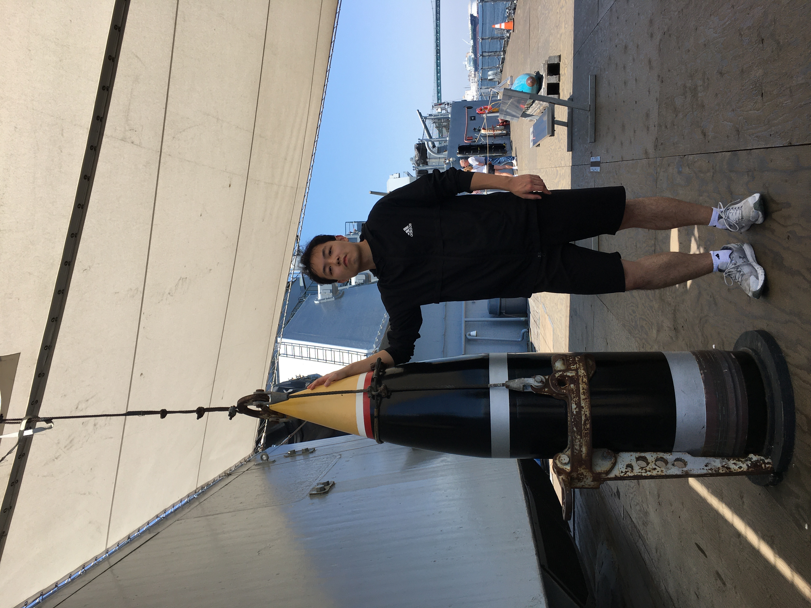

(Move your mouse on the screen to break the oil film)
My journey into the world of coding began with a
decision to immerse myself in the intricate art of
crafting digital experiences. Over the past couple
of years, I've delved deep into
frontend development,
honing my skills to create captivating user
interfaces that seamlessly blend functionality with
aesthetics.During a transformative summer break,
I had the opportunity to work with a
tech startup based
in Los Angeles.
Those three months were invaluable, allowing me to immerse myself
in real-world projects and witness firsthand the
exhilarating pace of innovation in the tech
industry. This experience not only bolstered my
technical proficiency but also instilled in me a
deep appreciation for the importance of
workflow
efficiency and
collaborative teamwork.
Reflecting on my journey thus far, I've come to
realize that my career aspirations are multifaceted.
While I'm deeply passionate about pushing the
boundaries of
CSS
to create
visually stunning animations
, I'm also
intrigued by the challenge
of
optimizing JavaScript for peak performance.
Looking ahead, I envision myself evolving into
a versatile
full-stack engineer
, seamlessly
bridging the realms of frontend and backend
development to create holistic solutions that
empower users and drive innovation.
In essence, my journey as a software developer
is not just about mastering languages and
frameworks; it's about harnessing technology
to shape experiences, foster connections, and
drive positive change in the world. I am eager
to embark on this journey of continual growth,
exploration, and innovation, and I look forward
to the opportunities and challenges that lie ahead.
Working Experience
LISUS Technologies Inc
2023.5-2023.7
Front-end Engineer Intern
Build a new version of official website using React and Redux
Designing a JSON file to transfer date from front to end
Implementing a build in google map for position selection
Education
University of Southern California
2023.1-2024.12
Master
Computer Engineering
Personal Website
2024.3-PRESENT
Use HTML, CSS and JavaScript to implement a personal website that can be accessed in real time and keep it updated on Github
Utilizing event delegation features to operate DOM elements and improving efficiency by reducing the number of listeners
- HTML
- CSS
- JavaScript
- DOM
Fast and reliable file transfer protocol
2023.9-2023.10
Using TCP, UDP and multi-threading, it successfully achieved high packet loss rate, high latency and fixed File transfer protocol in a high-bandwidth network environment
Implemented a customized network environment on AWS by deploying client, router and server virtual machines and setting interface characteristics
- TCP/UDP
- AWS
- Transfer Prototype
Flying Birds Game
2024.1-2024.2
Using HTML, CSS and JavaScript, designed and implemented a page-side Mini game
Implement a set of physics engines with gravity effects and collision detection through JS class-oriented design methods
- Video Games
- JavaScript
- Physical Engine